A&M Store Fixtures: logo options
Draft for review. Nothing here changes the live mockup. Each option links to the real homepage with that logo in the header and footer. Current live mockup
D: Slatwall panel
A slatwall panel in navy with AM cut clean out of the slats, and one slat in orange as the stocked shelf.
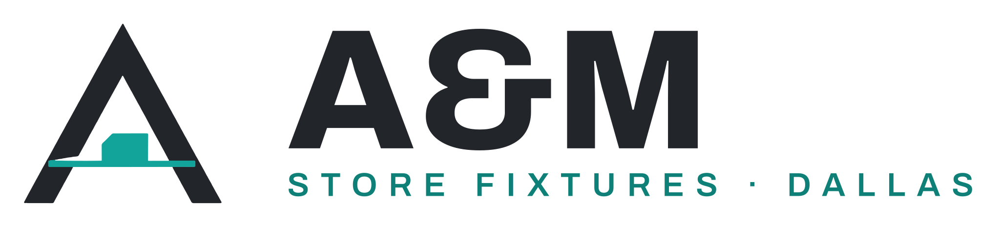
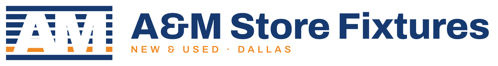
E: Price tag
A navy retail price tag with A and M punched out and an orange ampersand: the universal sign of a store.
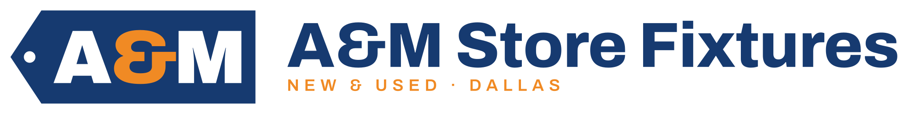
F: Rolling rack
A and M hanging from orange hooks on a rolling garment rack, drawn as one clean frame.
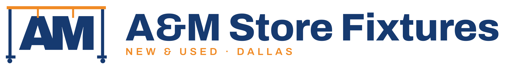
Earlier options
A: Hanger A
The A is the hanger: a heavy A with an orange hanger hook rising from its apex.
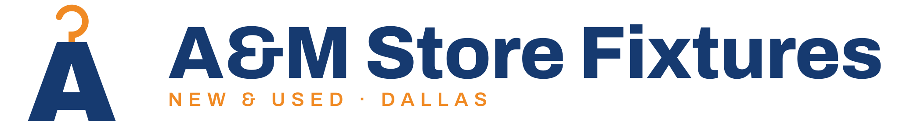
B: On the shelf
A tight AM ligature standing on an orange display shelf with brackets.
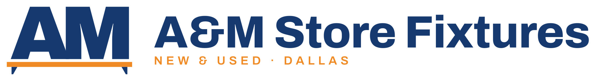
C: Orbit, modernised
Their own blue-and-orange ring, redrawn heavy and modern around A&M.
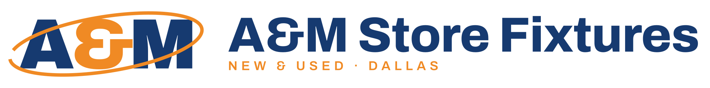
